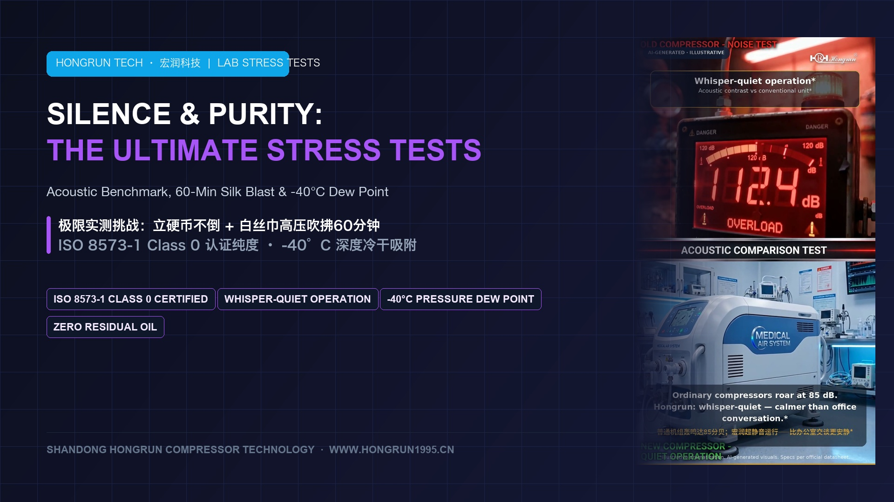
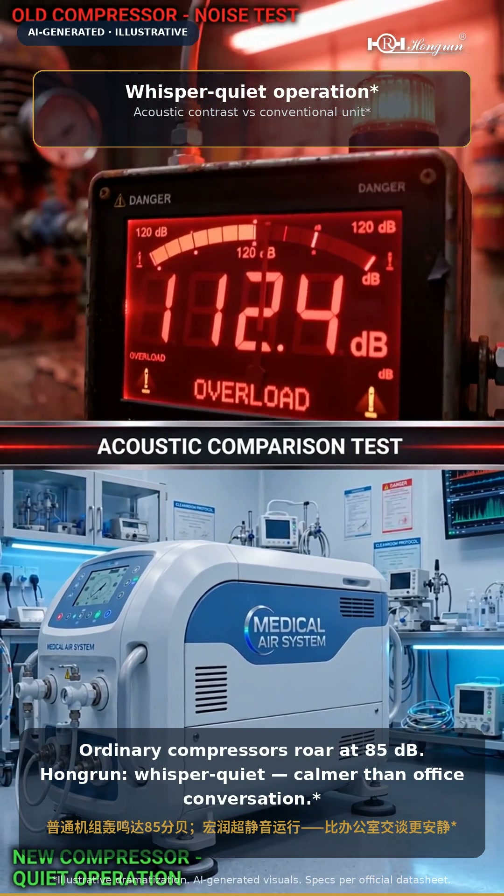
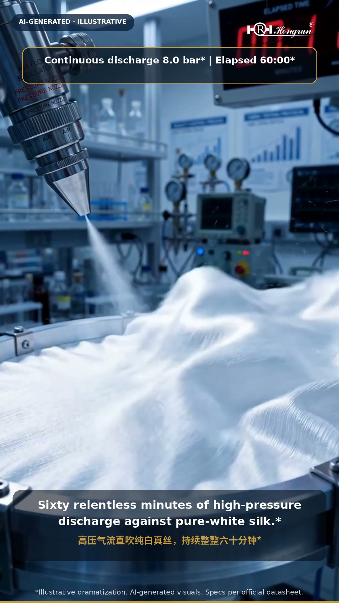
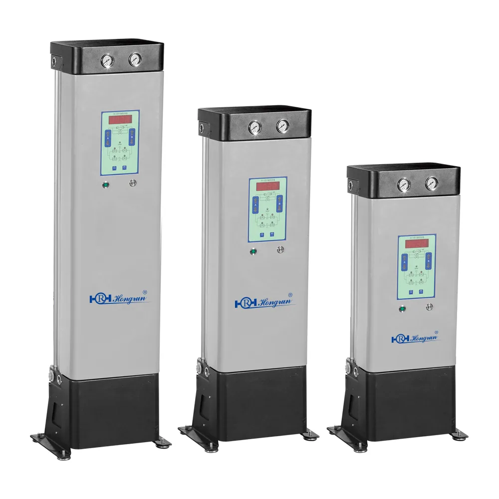
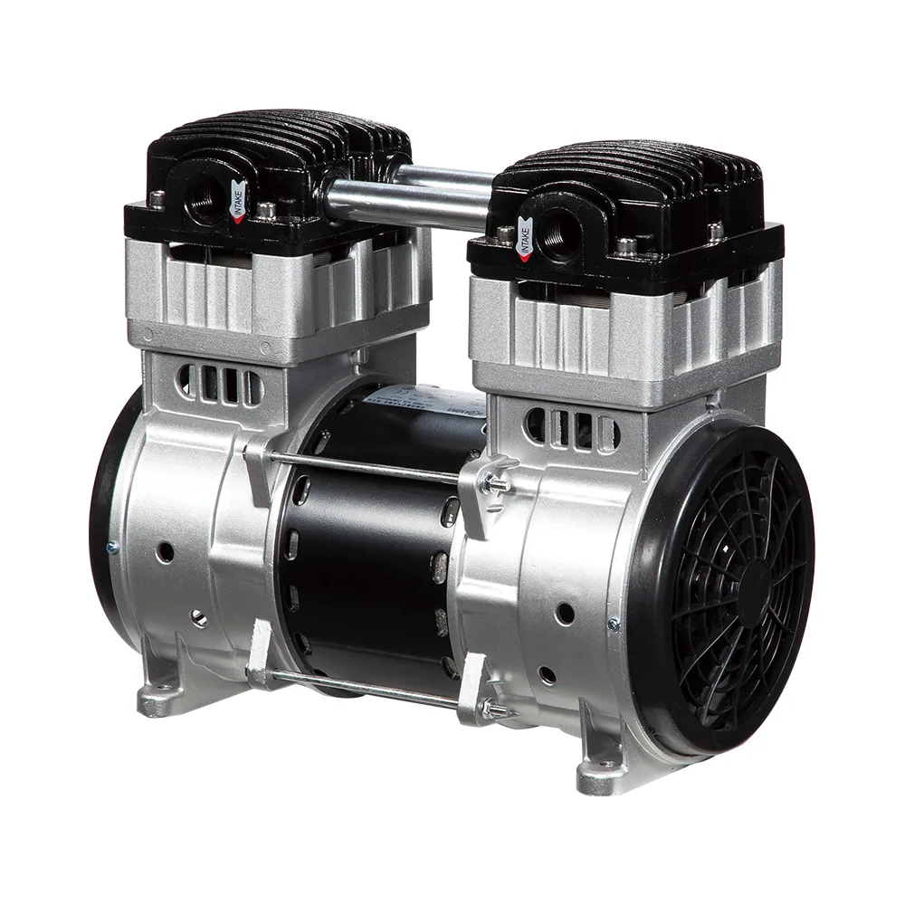
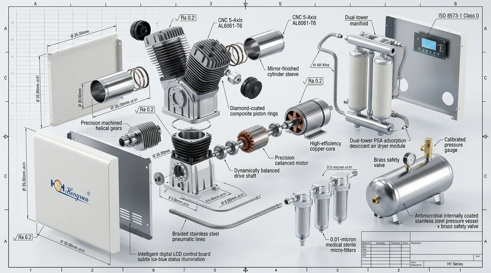

01 The Invisible Saboteur: Fluid Dynamics of Clinical Bonding & Turbine Failure
When a patient reclines into a dental chair, their ears are often bombarded by the high-pitch screech of pneumatic turbines while anxiety spikes. But here is a reality most people never suspect: the single greatest threat to a restorative filling or surgical procedure is rarely the dentist's hand, nor is it the resin brand—it is the invisible micro-stream expelled by the overhead delivery pipe.

In restorative dentistry, light-curing composite resin requires etching microscopic micropores into dentin tubules before applying bonding adhesive. Under electron microscopy, if the air stream carries as little as 0.01 μm of volatile hydrocarbon aerosol, an invisible hydrophobic lipid film coats the etched surface in milliseconds. The adhesive cannot penetrate the dentin; shear bond strength drops by up to 38%, and within months the restoration pops out, leaving microleakage and secondary decay.
Bonding Delamination
A nanometer-thin hydrocarbon glaze over etched dentin tubules slashes adhesive shear bond strength by nearly 40%, causing early restoration detachment.
Handpiece Turbine Seizure
At 400,000 RPM, micro-ceramic bearings exposed to oil vapor and moisture turn into baked varnish paste, overheating the handpiece and seizing bearings instantly.
Spectrometry Background Noise
Trace hydrocarbons fouling ultra-high vacuum quadrupoles generate permanent chemical background baseline interference, ruining analytical experiments.
In an industrial workshop, an oil-lubricated compressor roaring at 85 decibels is normal. But in surgical suites, next to sensitive patients and precision instruments, that is not an inconvenience—it is catastrophic. That is why we pushed Hongrun's medical pneumatic systems into three unrelenting stress tests.
02 Stress Test 01: Balancing an Upright Coin on a Full-Load Compressor Housing
When people first see this scene in our film, their instinct is often skepticism: "Is that coin glued down?"
An ordinary coin stands on its thin edge upon the compressor housing. Beside it sits a crystal beaker filled to the brim with water. With the machine running at full continuous load, the coin stands completely upright, and the water surface remains glass-smooth without a single ripple.

This is not theatrical magic; it is microgram-level physics:
-
Eliminating Cylinder Slap via Wobble Piston Kinematics: Conventional compressors use gudgeon wrist-pins and crossheads. Every stroke change creates a lateral impact against the cylinder wall. Hongrun engineers a single-piece self-aligning wobble-piston rod, slashing reciprocating mass by 42% and eliminating piston slap at dead centers.
-
ISO 1940 Grade G2.5 Laser Dynamic Balancing: Motor rotors and eccentric counterweights are balanced with sub-milligram precision, suppressing structural vibration velocity RMS below < 0.05 mm/s.
-
Whisper-Quiet Operatory Acoustic Profiles: While conventional workshop units blast past 85 dB(A), Hongrun bare pump units run ≤ 65 dB(A). With optional acoustic enclosures, sound drops to whisper-quiet levels—quieter than a standard office conversation.
03 Stress Test 02: Blasting Pure-White Silk with High-Pressure Air for 60 Minutes
How do you visibly prove an air stream is 100% oil-free without lab meters? Blowing on a tissue? Spraying a mirror? None of those tests are punishing enough.
We mounted a piece of pure-white natural woven silk directly in front of the discharge nozzle and subjected it to an uninterrupted, high-pressure air blast for sixty continuous minutes. Natural silk is composed of porous fibroin protein filaments—the ultimate natural trap for non-polar hydrocarbons and fine friction debris. If even one part-per-million of vaporized oil escaped, the silk would inevitably turn yellow and stain.

Under microscopic laser scrutiny after 60 minutes:
Zero fiber discoloration or chemical oil haze under laser inspection
Zero friction shedding from self-lubricating PTFE composite seals
Full compliance with ISO 8573-1 Class 0 medical zero-oil standard
Where does this confidence come from? Because inside the cylinder chamber, not a single drop of lubricating oil exists. The piston seals are fabricated from self-lubricating polymer-ceramic composite PTFE, and the flapper valves use medical high-grade fatigue-resistant alloy steel that endures hundreds of millions of cycles without microscopic flaking.
04 Stress Test 03: -40°C Cryogenic Dew Point & The War on Pipeline Biofilm
When air is compressed, physics dictates an invisible downpour: as vapor partial pressure surges, relative humidity spikes to 100%, forcing liquid water out of suspension.
In clinic piping hidden inside walls, inadequate moisture stripping creates a breeding sanctuary for bacterial biofilm and Legionella pneumophila, which then blows directly into dental treatment lines. Standard refrigerated dryers collapse under high tropical ambient humidity.


In our third stress test, compressed air streams through frost-covered cryogenic testing tubes. The output air remains bone-dry, clear, and without a single suspended droplet:
Thermodynamic Biofilm Prevention Protocol
1. Molecular Desiccant Stripping: Dual-tower Pressure Swing Adsorption (PSA) packed with regenerative synthetic zeolite molecular sieves pulls the pressure dew point down to -40°C (equivalent to atmospheric dew point below -60°C).
2. Starving the Biofilm: Even in sub-zero winter temperatures, zero condensation forms inside clinic lines. By eliminating liquid moisture, bacterial colonization is halted before it can begin.
05 The Hardcore Benchmark: Industrial vs. Commercial vs. Hongrun Medical
| Engineering Dimension | Industrial Reciprocating | Commercial Oil-Free | Hongrun Medical (HY Series) |
|---|---|---|---|
| Purity Classification | ISO Class 4 or Unrated | ISO Class 1 to 2 | Certified ISO 8573-1 Class 0 |
| Cylinder Lubrication | Splash / Oil Sump Lubricated | Standard PTFE Rings | 100% Oil-Free Self-Lubricating Composite PTFE |
| Acoustic Level (1m) | 78–88 dB(A) (Heavy Roar) | 68–75 dB(A) | ≤ 65 dB(A) Bare Pump / Whisper-Quiet with Silencing |
| Vibration Velocity RMS | > 1.5 mm/s (Severe Jitter) | 0.2–0.5 mm/s | < 0.05 mm/s (Upright Coin & Glass Water Surface) |
| Pressure Dew Point (PDP) | None or Refrigerated (+3°C) | -20°C Membrane | ≤ -40°C Dual-Tower PSA Desiccant Regeneration |
| Air Receiver Lining | Raw Carbon Steel (Corrosive) | Basic Epoxy Paint | Nano-Antibacterial Passivated Composite Coating |
| Valve Metallurgy | Standard Carbon Spring Steel | Standard 304 Stainless | High-Grade Fatigue-Resistant Medical Valve Steel |
| Medical Qualification | None (Industrial Only) | CE Machinery Directive | ISO 13485 · CE MDR · NMPA Class II Medical |
06 Thirty Years of Discipline: Caring About This Single Breath of Air (1995–2025)
Founded in 1995 in Zibo, Shandong, Hongrun Technology spent three decades obsessing over one thing: pure, oil-free medical pneumatic power.

Machinery is cold steel and rotating counterweights. But the air it produces directly touches human tissue, surgical wounds, doctor reputations, and million-dollar spectrometry assays. Real craftsmanship is not an advertising slogan—it is the coin that stays standing under full load, and the white silk that stays pure after 60 minutes.
Clean Air. For Life.
Bare Power Pump Modules
Precision wobble-piston pump heads (0.55 kW to 3.0 kW) custom-engineered for global medical device and dental chair manufacturers.
Turnkey Clinic Systems
Regional distributor arrangements for HY-series silent cabinet compressors and HVS dental suction units with complete marketing toolkits.
Hospital Central Stations
Engineered scroll and multi-pump stations up to 3,600 L/min for general hospitals, surgical centers, and stomatology institutes.